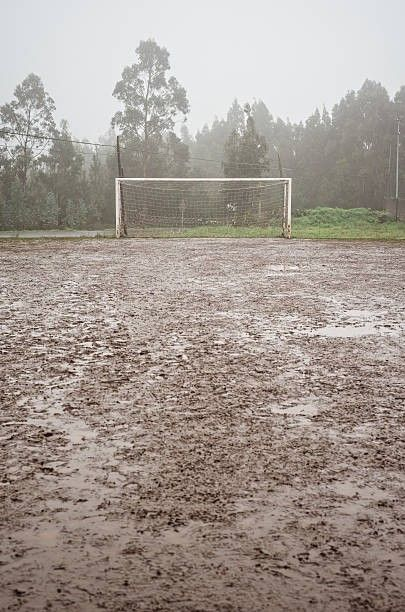
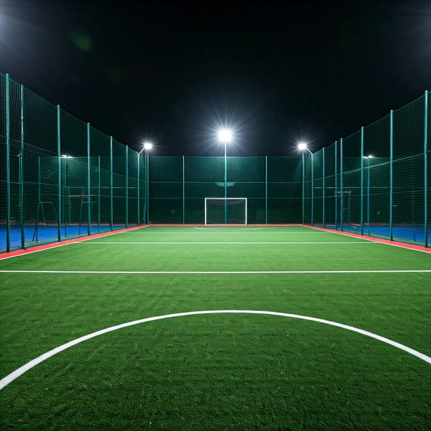

Asociación Civil
Fundación Pro Deporte
Impulsando el deporte y transformando comunidades
Contáctanos¿Quiénes somos?
Somos una asociación civil comprometida con la recuperación de espacios deportivos para que niñas, niños y jóvenes tengan lugares seguros donde entrenar y convivir.
Reparamos y mejoramos centros deportivos en la comunidad, y también desarrollamos cursos de verano para impulsar hábitos saludables, disciplina y trabajo en equipo.
Impacto social
Transformamos infraestructura y oportunidades: cada cancha rehabilitada y cada curso organizado fortalece el tejido social y abre nuevas posibilidades para la juventud.
Misión y visión
Misión
Apoyar a jóvenes por medio del deporte, recuperando espacios seguros y programas que fortalezcan su salud, disciplina y sentido de pertenencia en la comunidad.
Visión
Crear comunidades más saludables y unidas, donde el deporte sea un motor de convivencia, oportunidades y desarrollo para niñas, niños y adolescentes.
Valores
Trabajo en equipo, respeto, disciplina, inclusión y solidaridad guían cada proyecto, desde la rehabilitación de canchas hasta los cursos y eventos comunitarios.
- Trabajo en equipo
- Respeto
- Disciplina
- Inclusión
- Solidaridad
Antes y después
Un vistazo al estado previo de los espacios y al resultado tras la rehabilitación con la comunidad.


Galería de fotos
Canchas rehabilitadas, cursos de verano y actividades con la comunidad.

Testimonios
Voces de quienes participan y acompañan nuestros programas.
«Ahora tenemos un lugar seguro para jugar después de la escuela. Me gusta venir con mis amigos.»
«Se nota el cambio en el barrio: los jóvenes están más activos y la cancha ya no está abandonada.»
«El deporte les enseña disciplina y respeto. Ver el espacio rehabilitado motiva a seguir entrenando.»
Cómo ayudar
Tu apoyo hace posible rehabilitar canchas y sostener programas para la juventud.
Donaciones
Aportaciones económicas para materiales, mantenimiento y actividades.
Voluntariado
Apoyo en obra, organización de eventos y acompañamiento a niñas y niños.
Patrocinadores
Empresas o instituciones que impulsen proyectos deportivos en la comunidad.
Apoyo en especie
Pintura, herramientas, equipamiento deportivo u otros materiales útiles.